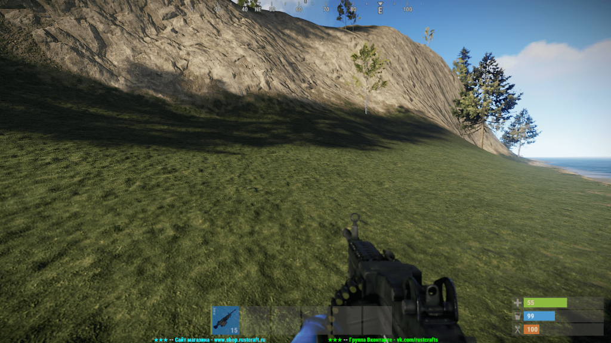
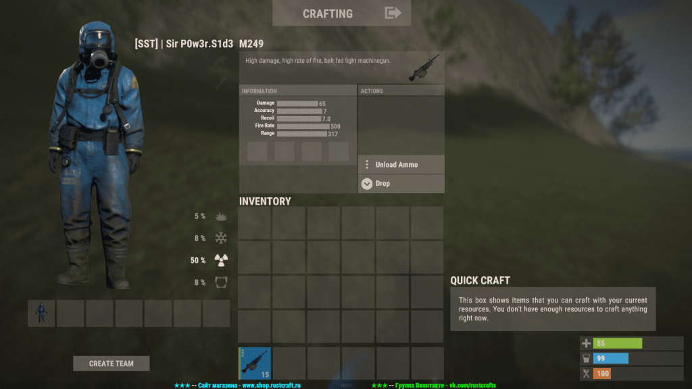

M249 в игре Rust
Создатель Rob Smith
Posted on May 15, 2023 at 12:00 PM
M249 в игре Rust Как я уже успел рассказать ранее, пулемёт M249 – единственный пулемёт в игре Rust. Он совмещает в себе большой боезапас, ведь за один заход он способен отстрелять целых 100 патронов калибра 5,56мм. А с учётом того, что M249 имеет урон в 65 единиц, можно с уверенностью сказать, что пулемёт является грозным орудием чуть ли не массового поражения. Скорострельность у M249 очень высокая – 500 выстрелов в минуту.
Казалось бы, самое мощное оружие, но разработчики должны же были хоть как-то сбалансировать данный ствол. В результате балансировки пулемёт получил слабую горизонтальную, но сильную вертикальную отдачу, а вместе с ней и приличный разброс. Медленная и скорость перезарядки – 7,5 секунд на полную перезарядку.

Даже несмотря на все свои минусы, которые на мой взгляд не столь значительны, пулемёт по праву считается одним из самых сильных стволов в игре, противостоять которому довольно сложно.
Пулемёт поддерживает все доступные модификаторы, то есть вы сможете установить на него любой прицел, надульник и подствольник.
Как скрафтить Пулемёт – оружие военного образца, которое невозможно воссоздать даже при помощи верстака третьего уровня, поэтому его нужно искать! Где найти пулемёт M249 Единственный способ получения машингана – найти его в одном из контейнеров. Контейнеров с пулемётом всего два: Ящик с танка – Шанс 8%; Ящик с вертолёта – Шанс 6%. Ремонт на специальном верстаке обойдётся вам в 11 единиц металла высокого качества + 30 фрагментов металла.